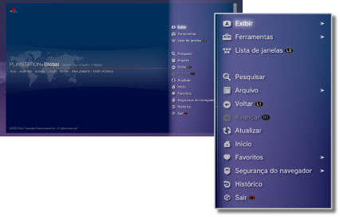
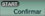

Rede > Operação básica do navegador de Internet
Operação básica do navegador de Internet
Visualizando a tela

(1) |
Título da página |
|---|---|
(2) |
Endereço da página |
(3) |
Ícone SSL |
(4) |
Ícone de ocupado |
(5) |
Ícone de segurança do navegador |
(6) |
Endereço de destino do link |
(7) |
Ponteiro |
Métodos de rolagem
| Botões de direção | Move o ponteiro para um link. |
|---|---|
Botão  + botão de direção + botão de direção |
Rola por página. |
| Controle direito | Rola na direção desejada. |
Utilizando o menu
Pressionar o botão  exibirá o menu, onde você poderá realizar várias operações e configurações. O menu pode ser exibido ou ocultado pressionando o botão . Os itens de menu diferem no modo de navegação e no modo janela.
exibirá o menu, onde você poderá realizar várias operações e configurações. O menu pode ser exibido ou ocultado pressionando o botão . Os itens de menu diferem no modo de navegação e no modo janela.

Inserindo um endereço (URL)
Ao pressionar o botão START, um teclado será exibido para que você possa inserir um endereço. Se você selecionar

depois de inserir um endereço, o teclado fechará e a página associada ao endereço inserido será aberta.Copiando texto
Você pode copiar o texto de uma página no navegador de Internet.
1. |
Utilize o controle esquerdo para mover o ponteiro para o local do texto que você deseja copiar e, em seguida, pressione o botão |
|---|---|
2. |
Segure o botão |
3. |
Solte o botão |
4. |
Selecione [Copiar] no menu exibido. |
Dicas
- Você pode colar o texto copiado utilizando o botão [Colar] do teclado na tela.
- Se você selecionar [Pesquisar] no passo 4, poderá fazer uma pesquisa na Internet utilizando o texto copiado como a palavra-chave.
Imprimindo uma página Web
Para usar este recurso, primeiro você deve configurar uma impressora selecionando  (Configurações) > [Configurações de impressora] > [Seleção de impressora].
(Configurações) > [Configurações de impressora] > [Seleção de impressora].
1. |
Abra a página Web que você deseja imprimir e, então, pressione o botão |
|---|---|
2. |
Selecione [Arquivo] > [Imprimir essa tela]. |
3. |
Verifique as configurações de impressão. |
4. |
Selecione [Imprimir]. |
Dica
As impressoras que podem ser utilizadas variam dependendo do país ou da região. Para obter mais informações, visite o site da SIE de sua região.
Abrindo diversas janelas
Você pode abrir diversas janelas ao mesmo tempo. Com o ponteiro colocado sobre o link, pressione e segure o botão  até que o link seja aberto em uma janela diferente.
até que o link seja aberto em uma janela diferente.